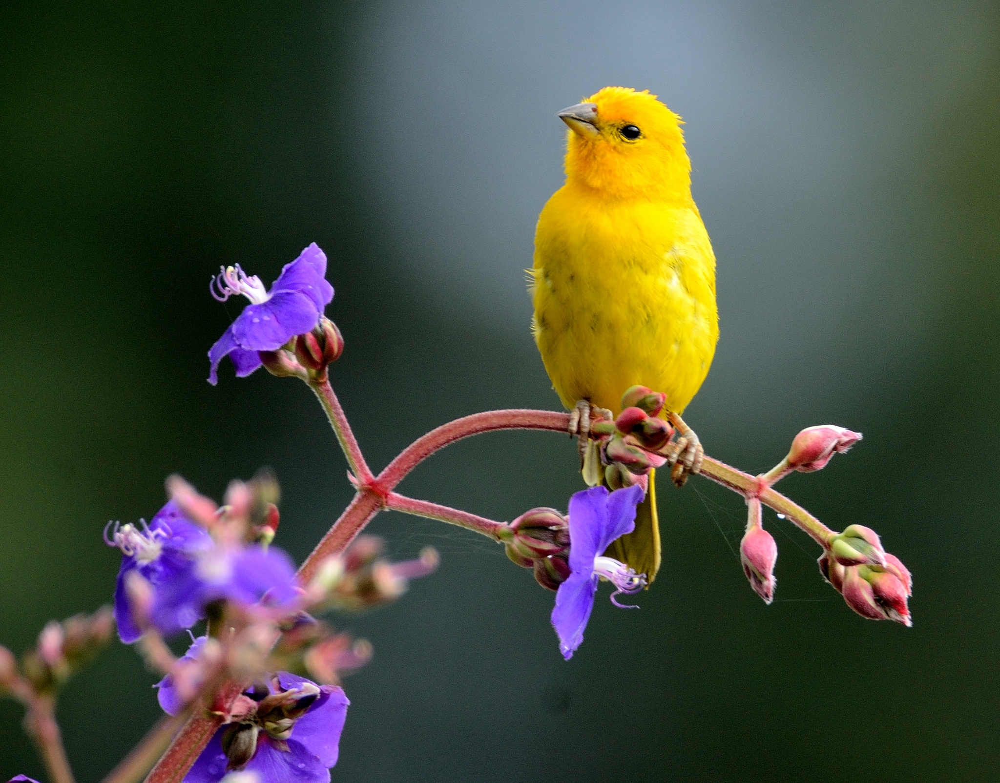
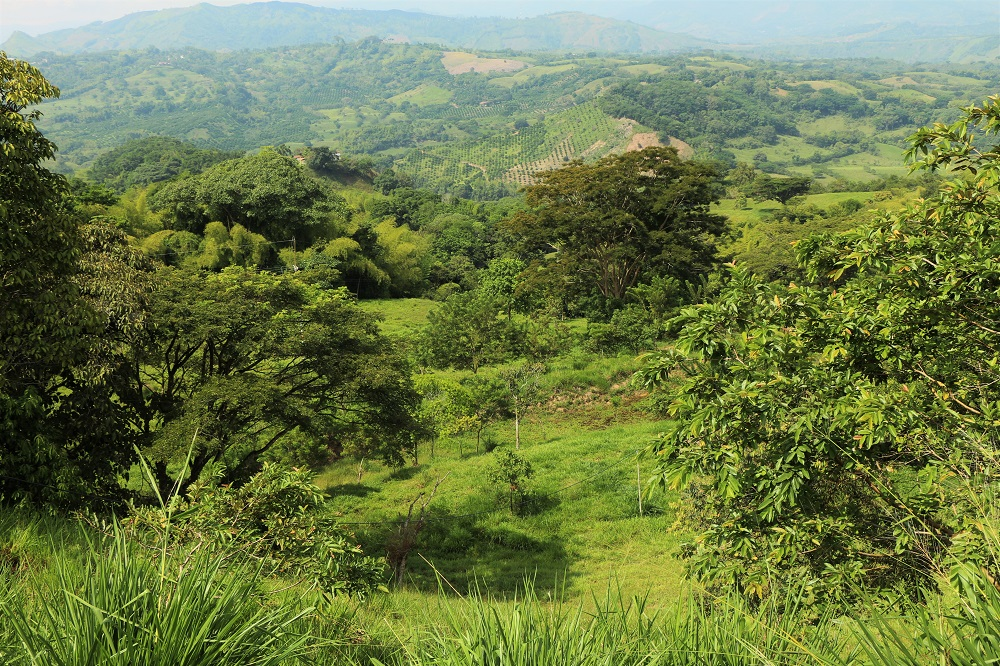
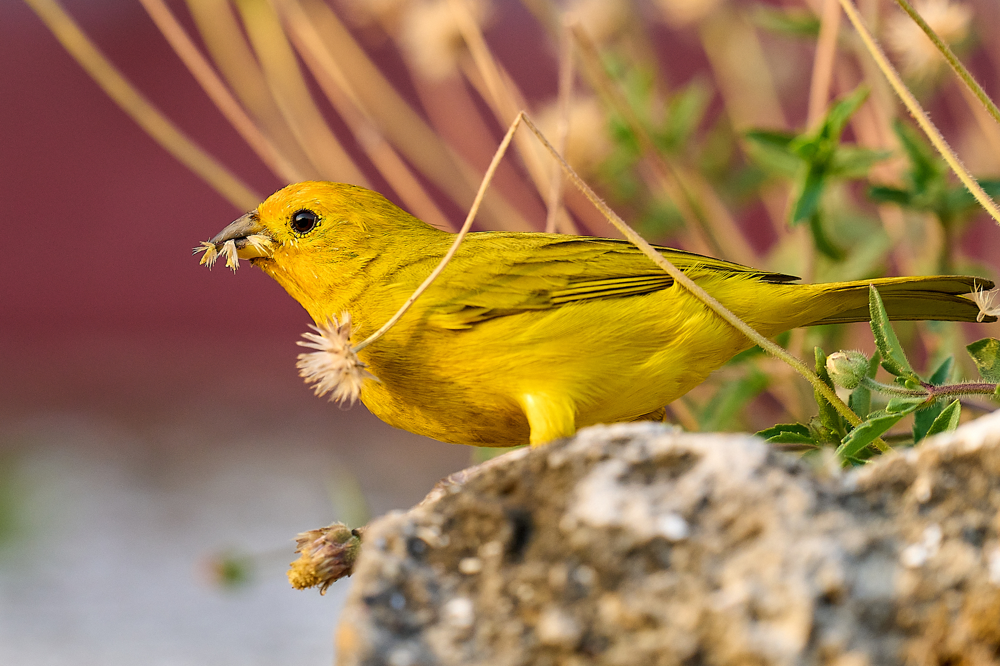
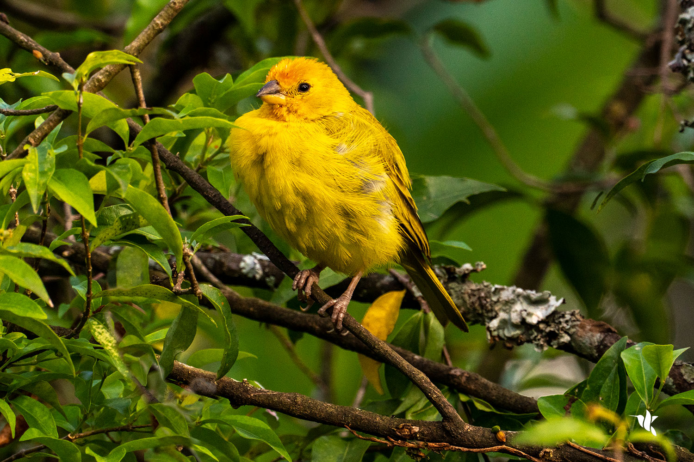
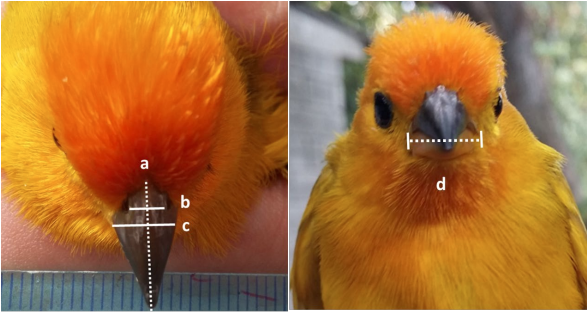
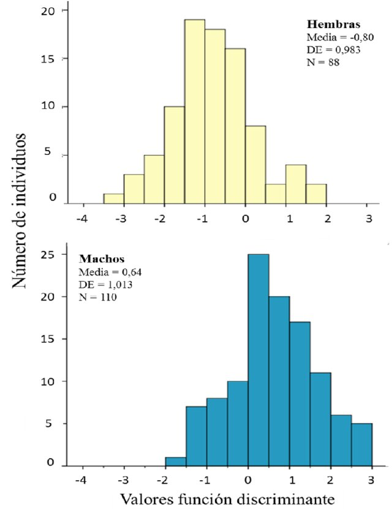

El Canario Coronado

El canario coronado (Serinus canaria) es un ave nativa de regiones semiáridas, adaptada a ambientes como el bosque seco tropical. Su colorido plumaje y su canto melódico lo convierten en una especie muy apreciada tanto por científicos como por observadores de aves.
Es un ave diurna, muy activa durante el día, y tiene hábitos sociales, viviendo en pequeños grupos fuera de la temporada de reproducción. Su longevidad promedio es de 7 a 10 años en libertad, aunque en cautiverio puede superar los 12 años con buenos cuidados.
Además, es una especie muy resistente, capaz de adaptarse a jardines, huertos y zonas semiurbanas, siempre que haya suficiente vegetación y disponibilidad de agua. Se ha utilizado como especie modelo para estudios de comportamiento, genética y canto de aves.
Hábitat

Habita principalmente en zonas de bosque seco tropical, donde predomina la vegetación dispersa y los árboles como el trupillo, el dividivi y el guayacán. Suele construir sus nidos en ramas altas para proteger a sus crías de depredadores.
Prefiere áreas con arbustos bajos y claros abiertos para alimentarse. La especie se adapta bien a cambios estacionales y puede habitar jardines y zonas agrícolas cercanas a su hábitat natural, siempre que haya suficiente vegetación y agua disponible.
El canario coronado es capaz de sobrevivir en altitudes bajas y medias, y su presencia suele indicar un ecosistema relativamente saludable, con árboles y arbustos que proporcionan refugio y alimento durante todo el año.
Alimentación

Su dieta se compone de semillas, frutos secos y pequeños insectos. Durante la temporada seca, aprovecha los recursos del bosque almacenando semillas que encuentra en el suelo y en plantas espinosas.
En cautiverio, los canarios coronados se alimentan de mezclas de semillas comerciales complementadas con frutas frescas y verduras. También necesitan agua fresca diariamente y, ocasionalmente, suplementos minerales para fortalecer su plumaje y salud general.
Durante la temporada de cría, incrementan el consumo de insectos para aportar proteínas esenciales al desarrollo de los polluelos. Su alimentación variada les permite adaptarse a cambios estacionales y a la disponibilidad de recursos en su entorno natural.
Comportamiento
Es un ave muy social y activa, reconocida por su canto melodioso. Durante el amanecer, los machos suelen cantar para marcar su territorio y atraer a las hembras. También realiza vuelos cortos y rápidos entre árboles cercanos.
Los canarios coronados muestran curiosidad y aprendizaje rápido, interactuando con su entorno. Durante la época de reproducción, los machos son más territoriales y pueden enfrentarse a otros machos para defender su espacio. Su comunicación incluye cantos complejos y llamadas suaves para interactuar con el grupo.
También se ha observado que estos canarios participan en juegos sociales, como persecuciones cortas y acicalamiento mutuo, lo que fortalece los lazos dentro del grupo y mejora la supervivencia colectiva. Son aves inteligentes que pueden reconocer y recordar lugares con buena comida y refugio.

Dismorfismo sexual
El canario coronado presenta diferencias notables entre machos y hembras. Los machos poseen un plumaje más brillante y una corona amarilla más intensa, mientras que las hembras muestran tonos más apagados y discretos.
Además, el canto del macho es más elaborado, utilizado principalmente para atraer pareja y defender su territorio. Durante la época de cría, las hembras se encargan principalmente de incubar los huevos y cuidar a los polluelos, mientras que los machos aportan comida y vigilancia.
Estas diferencias hacen que la especie sea un ejemplo claro de dimorfismo sexual entre aves. Los machos tienden a ser más visibles y activos para competir por hembras, mientras que las hembras priorizan el cuidado y la protección de los huevos y crías, asegurando la supervivencia de la especie.
También se puede notar variación individual en el canto y la intensidad del color, lo que influye en la selección sexual y en la capacidad de cada macho de atraer pareja y reproducirse exitosamente.


Créditos
Página web creada por:
- 🌿 Luisa Díaz Rivera
- 🌿 Álvaro Rodríguez Potes
- 🌿 María Fernanda Viloria Zapata
Curso de Biología
Profesor: Rafik Neme Garrido
2025